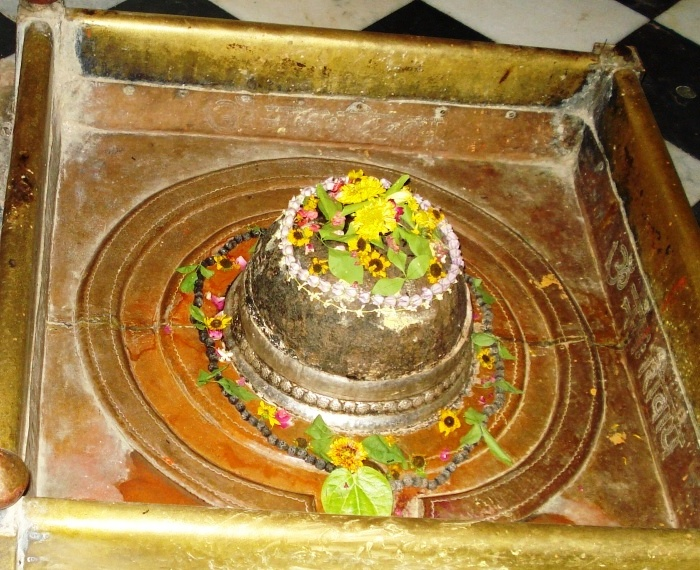

<?xml version="1.0" encoding="UTF-8"?><rss version="2.0"
	xmlns:content="http://purl.org/rss/1.0/modules/content/"
	xmlns:wfw="http://wellformedweb.org/CommentAPI/"
	xmlns:dc="http://purl.org/dc/elements/1.1/"
	xmlns:atom="http://www.w3.org/2005/Atom"
	xmlns:sy="http://purl.org/rss/1.0/modules/syndication/"
	xmlns:slash="http://purl.org/rss/1.0/modules/slash/"
	>

<channel>
	<title>Pitreshwar &#8211; Varanasi Temples</title>
	<atom:link href="index.html" rel="self" type="application/rss+xml" />
	<link>../../../../../index.html</link>
	<description>Temples of Varanasi as referred to in Kashi Khand</description>
	<lastBuildDate>Thu, 19 Jun 2025 05:16:46 +0000</lastBuildDate>
	<language>en-US</language>
	<sy:updatePeriod>hourly</sy:updatePeriod>
	<sy:updateFrequency>1</sy:updateFrequency>
	<generator>https://wordpress.org/?v=4.6.29</generator>
	<item>
		<title>PITRESHWAR</title>
		<link>../../../../../shiva-temples/pitreshwar/index.html</link>
		<pubDate>Mon, 10 May 2010 02:50:09 +0000</pubDate>
		<dc:creator><![CDATA[admin]]></dc:creator>
				<category><![CDATA[Other Shiva Temples (L-R)]]></category>
		<category><![CDATA[Pitreshwar]]></category>
		<category><![CDATA[Shiva Temples]]></category>
		<category><![CDATA[pitreshwar varanasi]]></category>

		<guid isPermaLink="false">../../../../../p=394.html</guid>
		<description><![CDATA[Goddess Parvaty wanted to know about  various Shiv Lings and deities at several places in Kashi and Lord Shiva was pleased to narrate about such deities (Kashi Khand, Chapter 97). Kashi Khand mentions one Pitreshwar Ling near a Pond named as Pitri Kund. Devotees who perform rituals for their forefathers at Pitri Kund and worship [&#8230;]]]></description>
				<content:encoded><![CDATA[<p>Goddess Parvaty wanted to know about  various Shiv Lings and deities at several places in Kashi and Lord Shiva was pleased to narrate about such deities (Kashi Khand, Chapter 97).</p>
<p>Kashi Khand mentions one Pitreshwar Ling near a Pond named as Pitri Kund.</p>
<p>Devotees who perform rituals for their forefathers at Pitri Kund and worship Pitreshwar Ling will make their forefathers very happy and in turn the devotees will always have their blessings.</p>
<p></p>
<h2 style="text-align: center;">(PITRESHWAR)</h2>
<h2>LOCATION OF PITRESHWAR</h2>
<p>Pitrehwar is located at C.18/47, Pitar Kund Talab. In fact the entire locality is known as Pitar Kunda, in reverence to this Holy Kund.  Devotees can travel upto this place by rickshaw from Maldahiya Loha Mandi, through Pishach Mochan and then upto Pitar Kunda.</p>
<h2></h2>
<p><strong>Please watch our YouTube video on the subject in the following link </strong></p>
<p>&nbsp;</p>
<h2><a href="https://www.youtube.com/watch?v=L6aCdl5kBjc&amp;t=65s">https://www.youtube.com/watch?v=L6aCdl5kBjc&amp;t=65s</a></h2>
<h2></h2>
<h2>TYPES OF POOJA</h2>
<p>The temple is open from 06.00 a.m. upto 10.00 p.m.  Aarti is held in the morning.  Our enquiries reveal that during Pitar Paksh (one fortnight just preceding Navratri in September-October), people perform rituals for their forefathers at Pitri Kund.</p>
]]></content:encoded>
			</item>
	</channel>
</rss>
